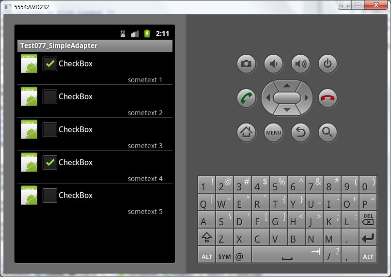
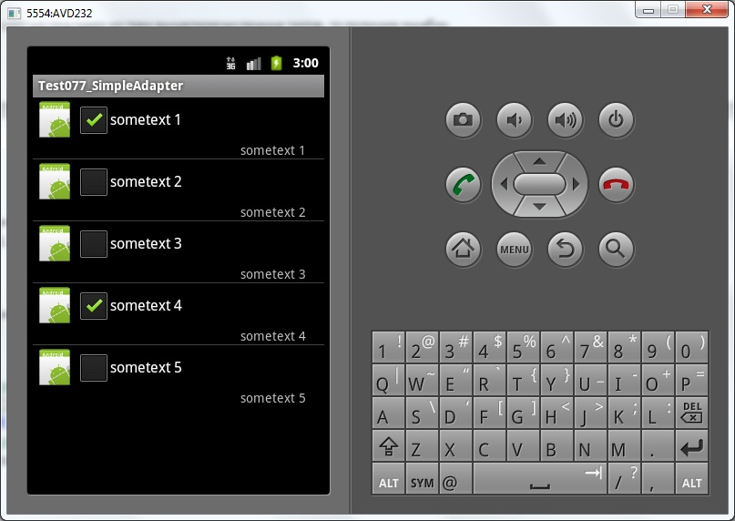
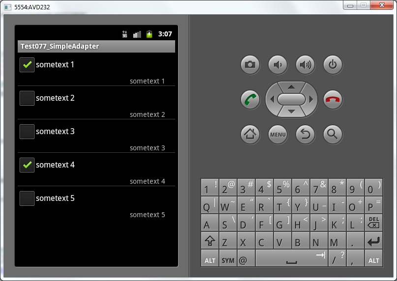

В этом уроке:
- рассмотрим пример использования SimpleAdapter
SimpleAdapter работает с данными такого вида List<? extends Map<String, ?>> - т.е. коллекция Map-объектов (или -наследников). Если смотреть с точки зрения списка, то каждый Map содержит данные для соответствующего пункта списка. Чтобы адаптер знал, какие данные в какие View-компоненты каждого пункта списка ему вставлять, мы указываем два массива: String[] from и int[] to. В from перечисляем ключи из Map, а в to – ID View-компонентов. Адаптер перебирает View из массива to и сопоставляет им значения из Map по ключам из from.
Проверим это на примере. Создадим небольшой список, каждый пункт которого будет состоять из checkbox-а, текстового поля и картинки.
Создадим проект:
Project name: P0481_SimpleAdapter
Build Target: Android 4.0
Application name: SimpleAdapter
Package name: ru.startandroid.develop.p0481simpleadapter
Create Activity: MainActivity
Рисуем экран main.xml:
<?xml version="1.0" encoding="utf-8"?>
<LinearLayout
xmlns:android="http://schemas.android.com/apk/res/android"
android:layout_width="fill_parent"
android:layout_height="fill_parent"
android:orientation="vertical">
<ListView
android:id="@+id/lvSimple"
android:layout_width="match_parent"
android:layout_height="wrap_content">
</ListView>
</LinearLayout>Здесь только LIstView.
Создаем item.xml для пункта списка:
<?xml version="1.0" encoding="utf-8"?>
<LinearLayout
xmlns:android="http://schemas.android.com/apk/res/android"
android:layout_width="match_parent"
android:layout_height="match_parent"
android:orientation="horizontal">
<ImageView
android:id="@+id/ivImg"
android:layout_width="wrap_content"
android:layout_height="wrap_content"
android:src="@drawable/ic_launcher">
</ImageView>
<LinearLayout
android:id="@+id/linearLayout1"
android:layout_width="match_parent"
android:layout_height="wrap_content"
android:layout_weight="1"
android:orientation="vertical">
<CheckBox
android:id="@+id/cbChecked"
android:layout_width="wrap_content"
android:layout_height="wrap_content"
android:text="CheckBox">
</CheckBox>
<TextView
android:id="@+id/tvText"
android:layout_width="wrap_content"
android:layout_height="wrap_content"
android:layout_gravity="right"
android:layout_marginRight="20dp"
android:text="TextView">
</TextView>
</LinearLayout>
</LinearLayout>Тройка ImageView, CheckBox и TextView будут у нас представлять каждый пункт списка.
Пишем код MainActivity.java:
package ru.startandroid.develop.p0481simpleadapter;
import java.util.ArrayList;
import java.util.HashMap;
import java.util.Map;
import android.app.Activity;
import android.os.Bundle;
import android.widget.ListView;
import android.widget.SimpleAdapter;
public class MainActivity extends Activity {
// имена атрибутов для Map
final String ATTRIBUTE_NAME_TEXT = "text";
final String ATTRIBUTE_NAME_CHECKED = "checked";
final String ATTRIBUTE_NAME_IMAGE = "image";
ListView lvSimple;
/** Called when the activity is first created. */
public void onCreate(Bundle savedInstanceState) {
super.onCreate(savedInstanceState);
setContentView(R.layout.main);
// массивы данных
String[] texts = { "sometext 1", "sometext 2", "sometext 3",
"sometext 4", "sometext 5" };
boolean[] checked = { true, false, false, true, false };
int img = R.drawable.ic_launcher;
// упаковываем данные в понятную для адаптера структуру
ArrayList<Map<String, Object>> data = new ArrayList<Map<String, Object>>(
texts.length);
Map<String, Object> m;
for (int i = 0; i < texts.length; i++) {
m = new HashMap<String, Object>();
m.put(ATTRIBUTE_NAME_TEXT, texts[i]);
m.put(ATTRIBUTE_NAME_CHECKED, checked[i]);
m.put(ATTRIBUTE_NAME_IMAGE, img);
data.add(m);
}
// массив имен атрибутов, из которых будут читаться данные
String[] from = { ATTRIBUTE_NAME_TEXT, ATTRIBUTE_NAME_CHECKED,
ATTRIBUTE_NAME_IMAGE };
// массив ID View-компонентов, в которые будут вставлять данные
int[] to = { R.id.tvText, R.id.cbChecked, R.id.ivImg };
// создаем адаптер
SimpleAdapter sAdapter = new SimpleAdapter(this, data, R.layout.item,
from, to);
// определяем список и присваиваем ему адаптер
lvSimple = (ListView) findViewById(R.id.lvSimple);
lvSimple.setAdapter(sAdapter);
}
}Разбираем код. Мы создаем константы для имен атрибутов, описываем массивы данных и пакуем эти данные в ArrayList<Map<String,Object>> (img у нас будет одинаков для всех). Далее мы определяем два массива, которые будут использованы для сопоставления данных и View-компонентов. Массив from содержит имена Map-ключей, а массив to – ID View-компонентов. Т.е. в R.id.tvText будет вставлено значение из элемента Map с ключом ATTRIBUTE_NAME_TEXT и т.д. по порядку. После этого мы создаем адаптер и увязываем его со списком.
Все сохраним и запускаем. Видим, что все так, как мы и планировали.

Адаптер перебрал View-компоненты (массив to) для каждого пункта списка и сопоставил им значения из Map (массив from). Т.е. карта сопоставления примерно такая:
R.id.tvText – Map.get(ATTRIBUTE_NAME_TEXT)
R.id.cbChecked - Map.get(ATTRIBUTE_NAME_CHECKED)
R.id.ivImg - Map.get(ATTRIBUTE_NAME_IMAGE)
А как адаптер понимает, какие методы и для каких View-компонентов надо вызывать, чтобы передать им значения из Map? Он смотрит на тип View-компонента и в зависимости от него уже определяет как работать с ним. Для него существует три типа:
1) View, наследующие интерфейс Checkable. Примеры - CheckBox, CheckedTextView, CompoundButton, RadioButton, Switch, ToggleButton. В этом случае адаптер проверяет, является ли соответствующее значение из Map типа boolean. Если да, то все ок и вызывается метод Checkable.setChecked. Иначе получим ошибку.
С версии 2.2 алгоритм чуть поменялся – добавили еще одну ветку логики. Теперь, если значение из Map не boolean, то проверяется, что View является наследником TextView. Если да, то вставляется текстовое значение из Map.
2) View, являющиеся TextView или его наследниками. Тут просто вызывается метод SimpleAdapter.setViewText, а он уже вызывает TextView.setText и передает туда значение из Map.
3) View, являющиеся ImageView или его наследниками. Адаптер проверяет тип данных из Map:
- если их можно привести (instanceof) к типу Integer, то вызывается метод SimpleAdapter.setViewImage(ImageView v, int value), а он уже вызывает ImageView.setImageResource.
- иначе вызывается метод SimpleAdapter.setViewImage (ImageView v, String value), который снова пытается привести значение к int и вызвать метод ImageView.setImageResource, и, если не получается, то преобразует строку к Uri (Uri.parse) и вызвает метод ImageView.setImageURI(Uri).
Если View не подходит ни под один из трех вышеперечисленных типов, то получим ошибку.
Немного поэкспериментируем, и попробуем в CheckBox вставлять тот же текст, что и в TextView. Адаптер сможет это сделать, т.к. CheckBox является наследником TextView.
Для этого перепишем заполнение массивов:
// массив имен атрибутов, из которых будут читаться данные
String[] from = { ATTRIBUTE_NAME_TEXT, ATTRIBUTE_NAME_CHECKED,
ATTRIBUTE_NAME_IMAGE, ATTRIBUTE_NAME_TEXT };
// массив ID View-компонентов, в которые будут вставлять данные
int[] to = { R.id.tvText, R.id.cbChecked, R.id.ivImg, R.id.cbChecked };Мы добавили адаптеру указание, чтобы он в R.id.cbChecked (CheckBox), вставил текст из Map по ключу ATTRIBUTE_NAME_TEXT.
Сохраняем, запускаем.

Текст успешно вставился в CheckBox.
Теперь попробуем передать данные неверно. Например, вместо id изображения, передадим boolean в R.id.ivImg. Для этого изменим from:
// массив имен атрибутов, из которых будут читаться данные
String[] from = { ATTRIBUTE_NAME_TEXT, ATTRIBUTE_NAME_CHECKED,
ATTRIBUTE_NAME_CHECKED, ATTRIBUTE_NAME_TEXT };Сохраним, запустим.

Видим, что картинки нет. Адаптер определил, что передали не Integer и попытался показать картинку по Uri из текстовой интерпретации boolean, но у него не получилось.
В общем, штука неплохая, но функционал довольно ограничен - поставить галку, указать картинку и разместить текст. В следующий раз попробуем расширить функционал под свои потребности.
Думаю, имеет смысл сказать, что, если ставить и снимать галку в пунктах, то данные адаптера при этом не меняются.